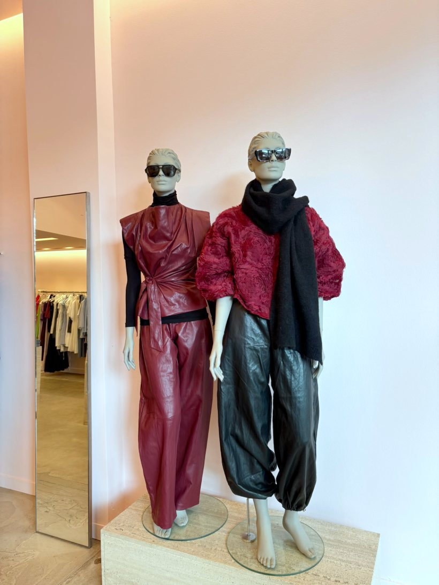
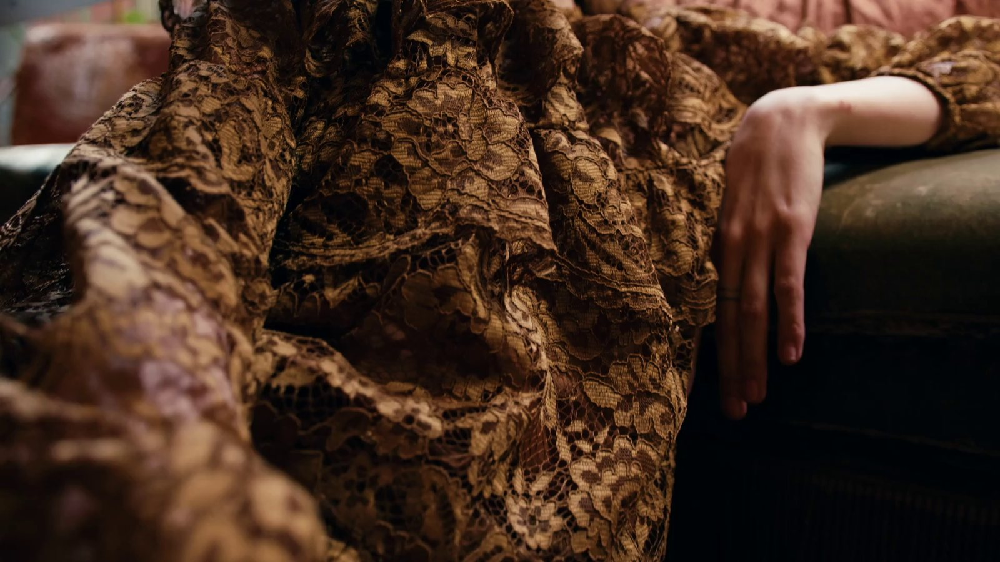
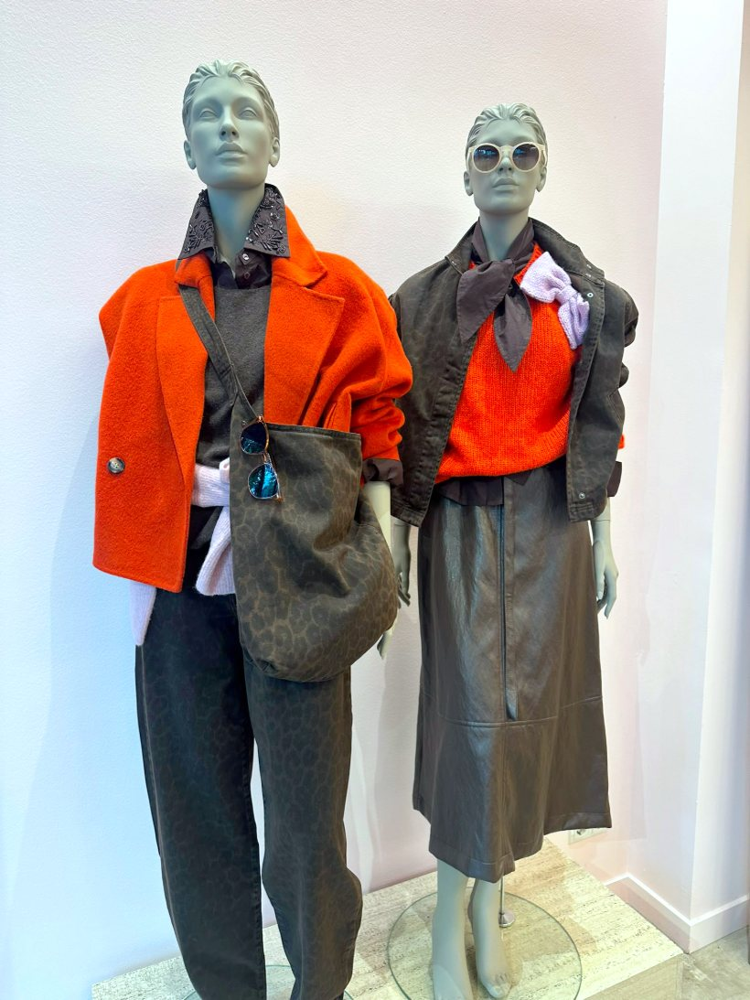
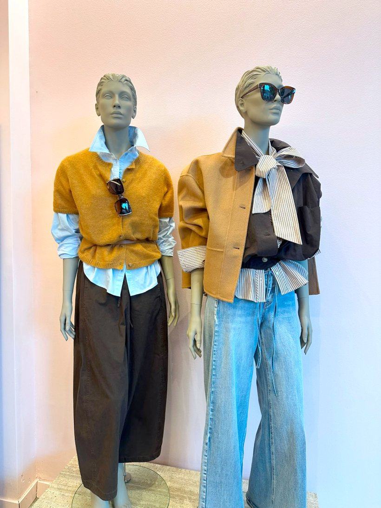
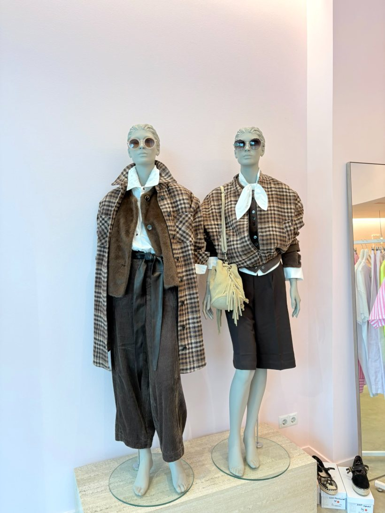
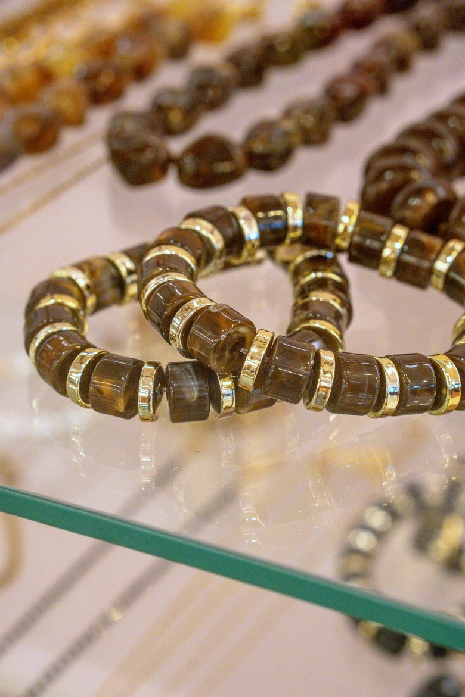
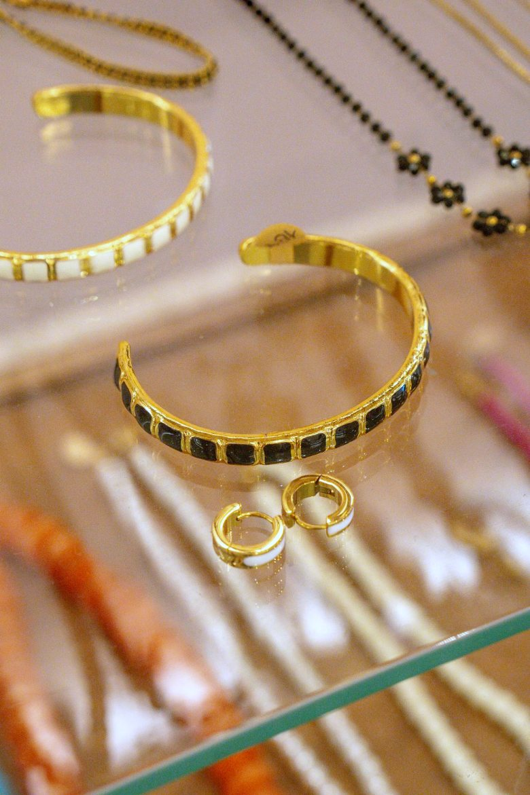
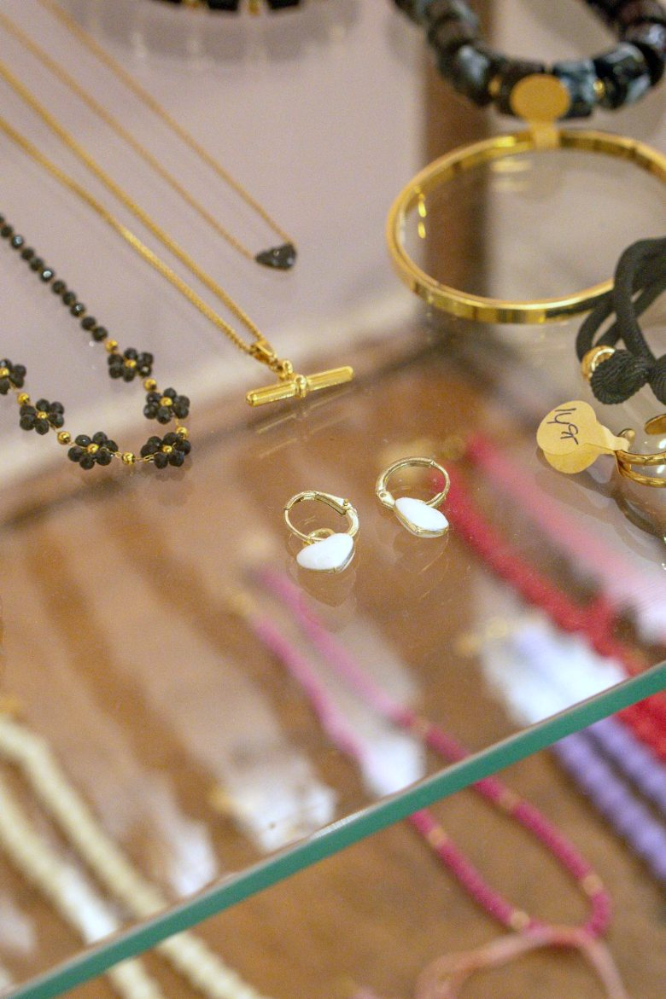
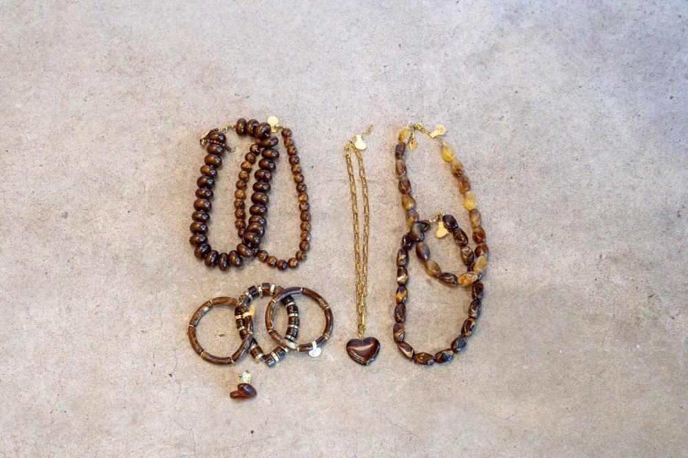
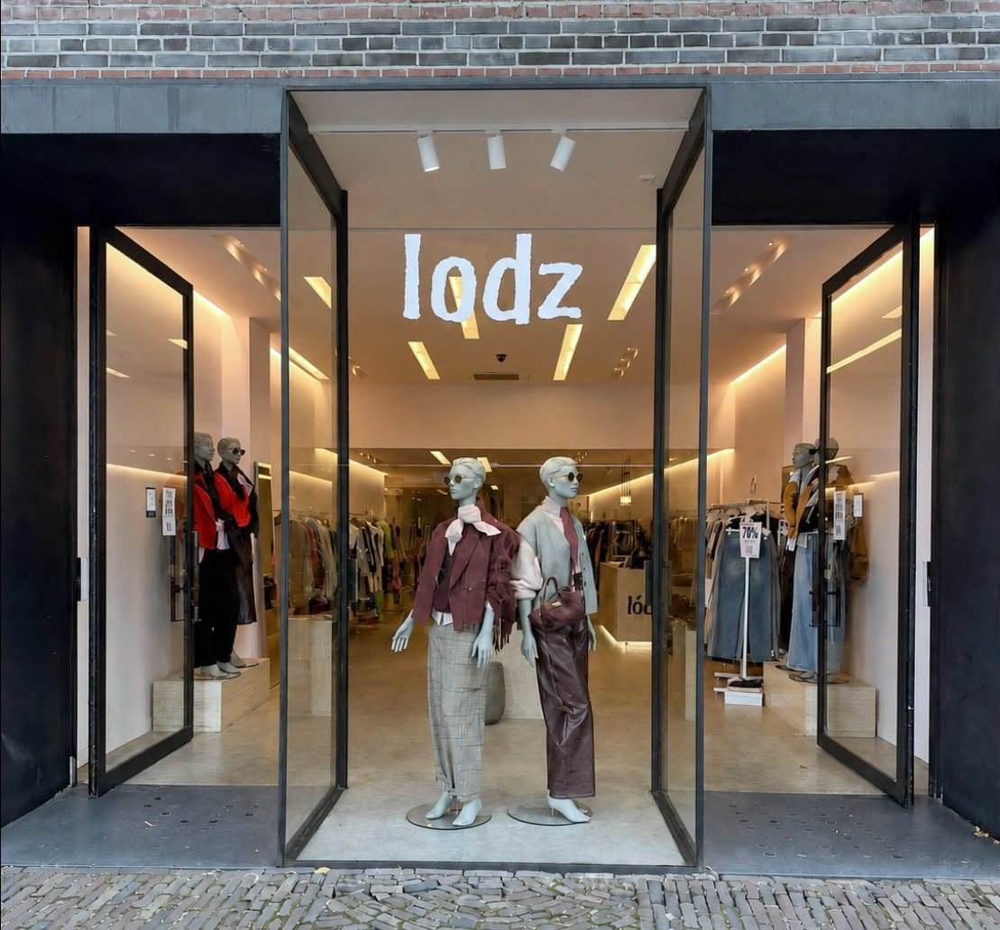

Nieuw

Een greep uit wat deze week in de winkel hangt. Alles per stuk geselecteerd — te zien, te voelen en te passen bij ons in Oisterwijk.




Sieraden in amber, bruin en goud — de details waarmee een look af is. Ook die zoeken we in de winkel met u uit.





Wat begon als één rek zorgvuldig gekozen stukken, is nu een begrip in Oisterwijk.
Onze selectie komt direct bij officiële distributeurs in Milaan, Parijs en Düsseldorf vandaan. Elk stuk hangt in de winkel, waar we met u kijken naar stof, pasvorm en combinaties — vrijblijvend en zonder verkooppraat.
Openingstijden & route